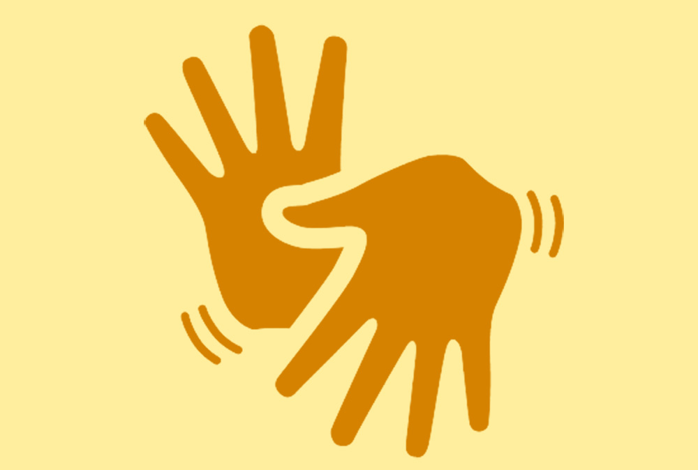
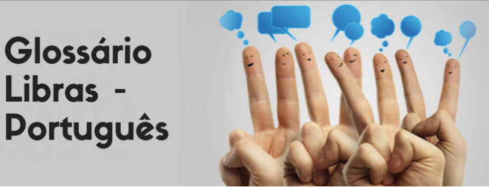
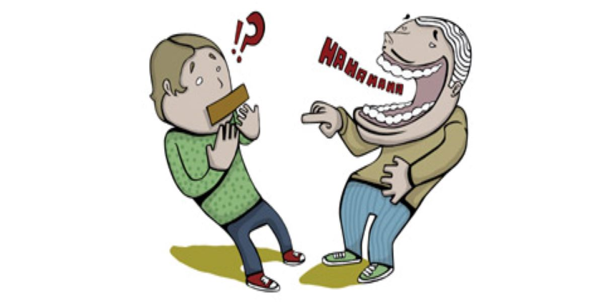
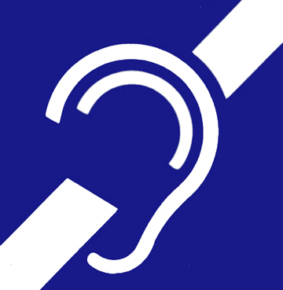

Noticias e curiosidades
Importancia de interpretes de libras em orgãos publicos.
BREVE TEXTO AQUI.
Estefane Gonçalves
12 de mai · 5 min atrás
Inserção de surdos no mercado de trabalho.
BREVE TEXTO AQUI.
Priscilla Drumond
12 de mai · 5 min atrás

A importancia de comunicação em libras na vida das pessoas surdas
BREVE TEXTO AQUI.
Jessica Uiany
12 de maio · 5 min atrás





Os diferentes mundos do ser ouvinte e do ser surdo
BREVE TEXTO AQUI.
Jessica Uiany
12 de maio · 5 min atrás
Entretenimento
-
Acessibilidade em jogos eletrônicos
Douglas
-
Jogos para aprender a linguagem dos sinais (libras)
Luana Fernandes
-
Aplicativos móveis que facilitam a comunicação entre surdos e ouvintes.
Luiz Henrique
-
Dicas de filmes e séries.
Mariane Alves